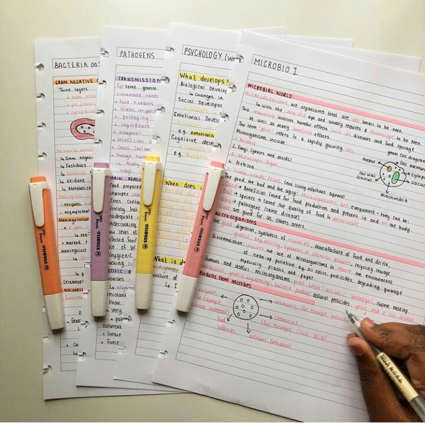
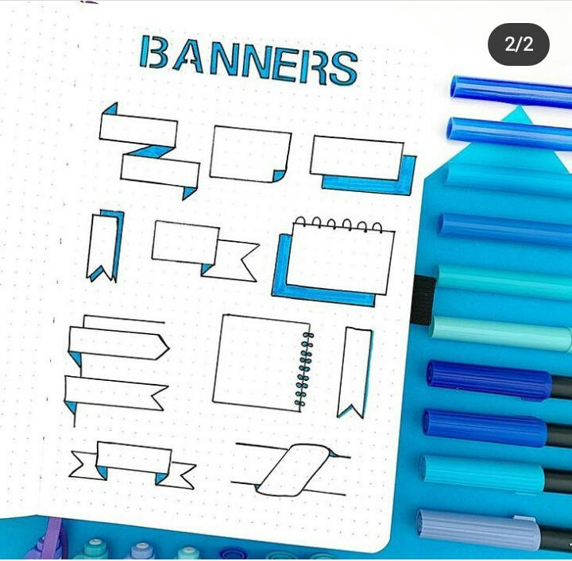
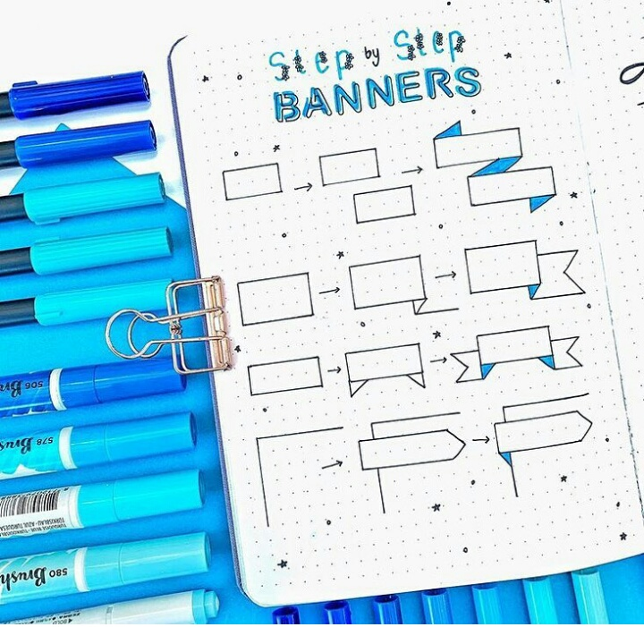
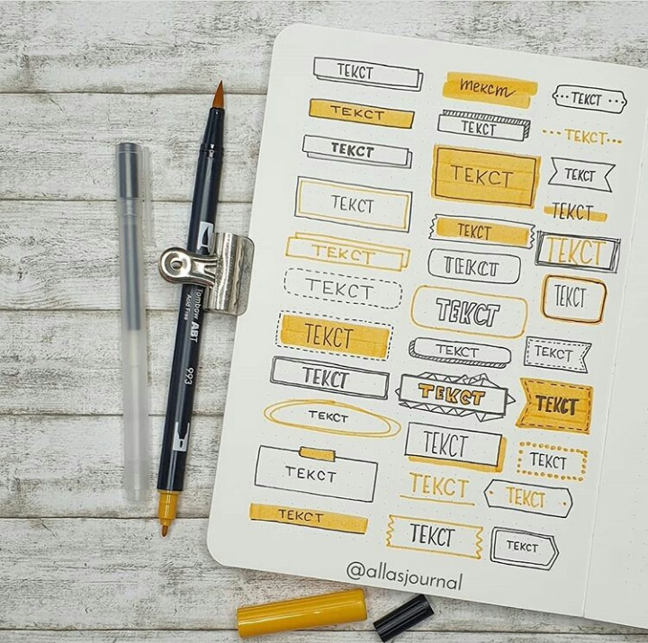
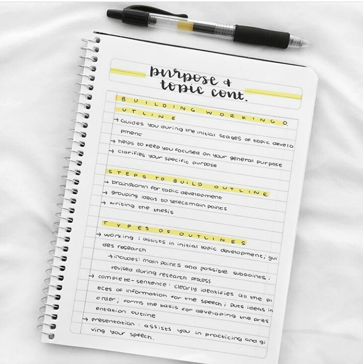
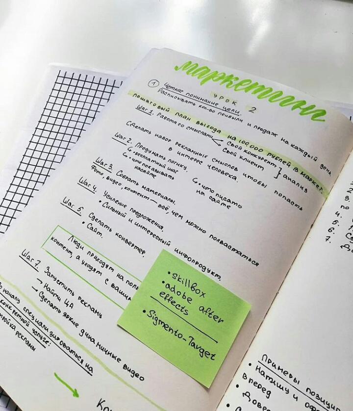
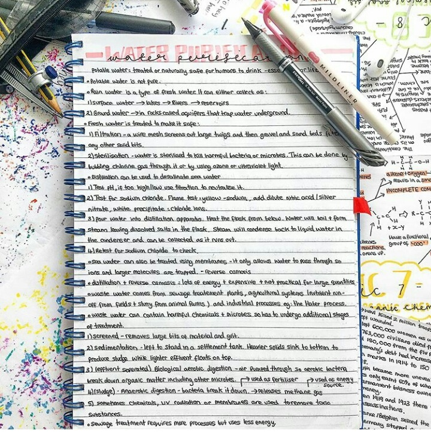
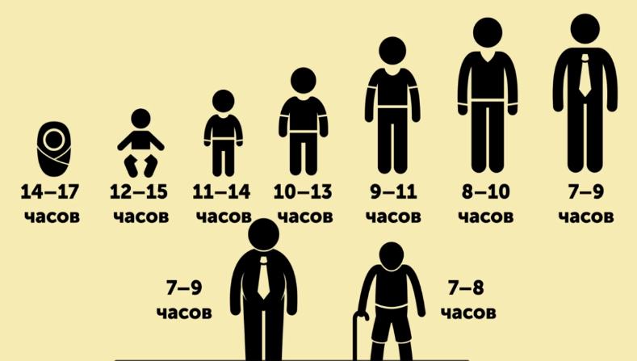

Новый учебный год, новый дополнительный кружок – это новые трудности и дополнительная нагрузка. Мы – студенты первого курса, не понаслышке знаем какого это, начинать учиться с большим энтузиазмом, а спустя месяц у многих опускаются руки. Многие проходили через это, в том числе и мы. Нам стало интересно, почему великие люди были успешны в своих начинаниях и при этом оставались в здравом уме. В течение года мы изучали эту тему и пришли к трём факторам продуктивной работы:
1. Правильное оформления письменных работ
2. Секрет распределения времени
3. Здоровье – один из важных аспектов жизни
Этими навыками я хотела бы поделиться с будущими студентами 1 курса. Также эта информация может пригодиться для учеников школ, например, в подготовке к экзаменам или просто для успешного обучения.
Команда STUDHELP провела тестирование "Диагностика доминирующей перцептивной модальности С. Ефремцева" и были получены следующие результаты:
52% детей имеют визуальный тип восприятия информации
23% детей имеют аудиальный тип восприятия информации
(Тестирование проходили студенты 1 курса Сургутского политехнического колледжа).
На основе данных результатов мы подобрали материалы, которые могут помочь студентам данных типов улучшить свой учебный процесс.
Вы можете определить свой тип и получить более подробную информацию по данной теме, перейдя на главную страницу -> раздел «Тест на мышление».
И таак.. Приступим!
1. Правильное оформление работ
По результатам тестирования мы выяснили, что лидируют кинестетики и визуалы. Для таких людей удобнее всего работать с информацией «руками» и «глазами». Мы хотим предложить варианты оформления конспектов и научить правильно структурировать полученную информацию.
Для начала предлагаем вам обозначить разные цвета маркеров для каждого предмета. Или, к примеру определения и правила выделять красным, а важные моменты и примеры желтым. Так же вы можете приобрести цветные ручки, главное соблюдать цветовые обозначения, так будет легче найти нужную информацию.

Теперь определимся с заголовками. Вы можете выделять заголовки самыми разными способами. Вам будет лучше видно объем информации от начала и до конца. Выделяйте каждый новый раздел, тему и параграф разными видами заголовков. Здесь так же очень удобно использовать разные цвета маркеров и ручек.




Очень важно не стараться сэкономить как можно больше места, а
писать конспекты и работы понятными для себя. Ведь имея огромный
параграф, вы сможете выучить его, сделав понятный для ВАС
конспект.
Посмотрите, здесь текст не написан до конца строчки (
«лишь бы на страничку влезло» ), каждый абзац
выделен, каждая мысль начинается с новой строки, хорошо выделен
заголовок и подзаголовки. Почерк понятный, хорошо
читабельный.

Далее очень удобно в работе использовать «стикеры» и всевозможные «наклейки». Так вы сможете оживить свой конспект и сделать его «интерактивным». Вы сконцентрируете свое внимание на важном определении или правиле и в нужный момент, этот акцент откликнется в вашей памяти. К тому же определения, формулы вы можете выделять в "рамочки" используя, как пример, образцы на картинках выше - "для заголовков"

Если вам необходимо сделать конспект, а в параграфе как на зло
нет никаких картинок, схем и дан один сплошной текст, не
переживайте, не нужно списывать просто все подряд, тут тоже
найдется верное решение.
Вы открываете параграф, старинным методом
выделяете "самое главное», затем в понятном виде
пишете это. Здесь главное не смешивать информацию, чтобы среди
вашего текста можно было найти нужное. Ваша задача –
сделать ОГРОМНЫЙ параграф приятным и удобным для вашего
использования. Поверьте, учеба станет легче, а материал
понятнее. Преподаватели очень ценят, когда работы выполнены
аккуратно


2. Составь список важных дел.
-
Составь список важных дел
Чтобы ничего не упустить и успеть сделать все дела в срок можно составить список дел. Вроде бы простая система, но, Во-первых, видя этот список ты держишь свой мозг в тонусе, как будто не даешь ему расслабиться, до тех пор, пока у тебя есть список с целями. Во-вторых, визуализируя задачи, ты повышаешь вероятность их выполнения, потому что эти задачи уже не просто у нас в голове, а записаны на бумаге


Конечно, мы все имеем ограниченные запасы энергии и времени и
составляя будет ошибкой написать 100 дел на день и просто
утонуть в них… Но и для этой проблемы есть решение.
-
Методика 1-3-5
Эта методика помогает избавиться от огромного списка дел. Каждый день планируем себе по 9 самых важных дел. Затем делим их на группы.
1 задача – самая важная задача, которая всегда будет в приоритете. Это цель нашего дня.
3 задачи – дела, которые требуют решения в течении рабочего дня.
5 задач – мелкие позиции, которые выполняются по возможности. Их можно перенести на другой день, в случае чего.
Всего 9 дел. Главное, чётко соблюдать количество, иначе метом будет неэффективным.
Так же эта техника хорошо работает в комбинации с техникой «установка временных границ».
-
Установка временных границ
На каждое дело нужно определить свои границы времени. На пример:
делать математику, русский и историю (3 часа)
прочитать 3 главы по литературе (1 час)
помыть посуду (15 минут)
собрать портфель и спортивную сумку на следующий день (10 минут).
-
Составление расписания
Очень важной частью правильного распределения времени является составление расписания. Если ты четко знаешь, где и во сколько тебе надо быть, когда и чем ты должен заняться, у тебя не случится казусов и неприятных ситуаций. Ты перестанешь опаздывать и не будешь забывать выполнять то или иное дело. Важно создать свое собственное расписание, куда будут вписаны тренировки, уроки, дополнительные консультации (не забываем включить туда отдых и время на личные дела).
Для тех, кто не любит рисовать, можно скачать скелет и заполнить его
3. Здоровье – один из важных аспектов жизни
Учеба – тяжелый труд. Мы очень истощаем свой организм в погоне за хорошими отметками. Главное не забывать, что организму нужно восстановление. Самая частая ошибка учащихся – нехватка сна. Студенты и ученики спят меньше положенной нормы.
Нормой сна ребенка 14-18 лет является 9-11 часов, с 18-24 лет
нормой считается 8-10 часов

Периодически нужно позволять себе какие-то радости
Для кого-то это поход в кино, для кого-то вечер с красками в
руках, одному нужна порция любимых конфет, а другому будет
лучше, если он проведет время за компьютером в любимой игре.
Главное помнить, что нужно знать во всём меру. Время от времени
выключай компьютер, занимайся другими интересными делами. Так же
спорт и медитация хорошо помогают снять стресс и напряжение.
Нужно обращать внимание на сигналы организма. Переутомление
плохо сказывается на продуктивности работы.
Чтобы оставаться в моральном и физическом равновесии со своим
организмом, нужно обязательно хорошо спать и давать себе время
на восстановление. Это очень важно!